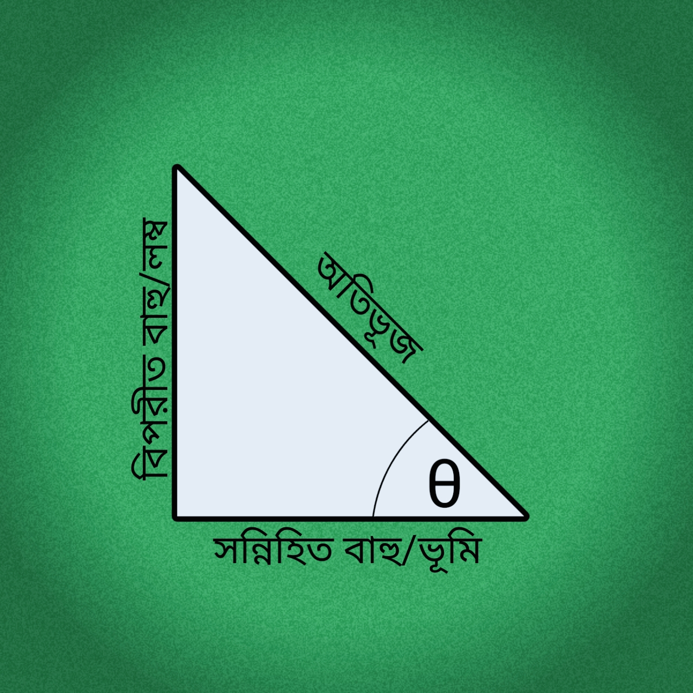
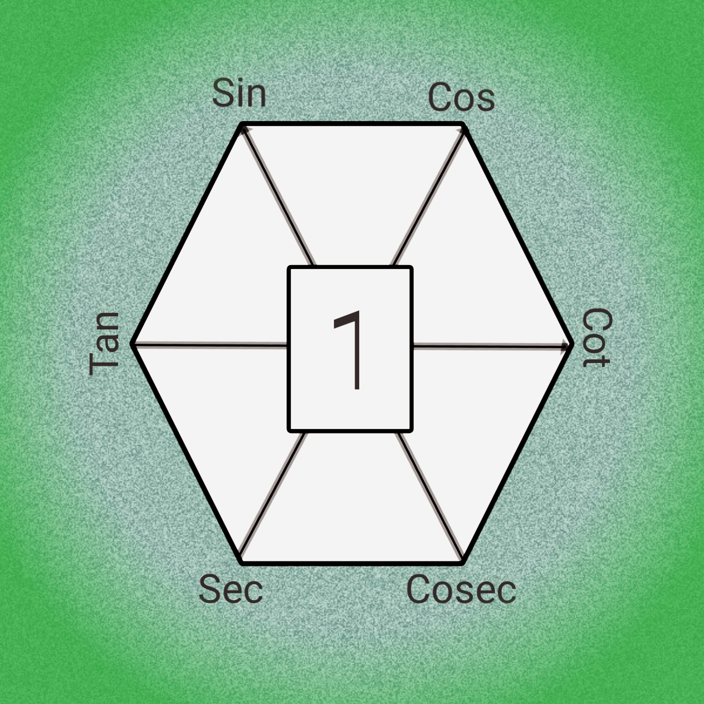
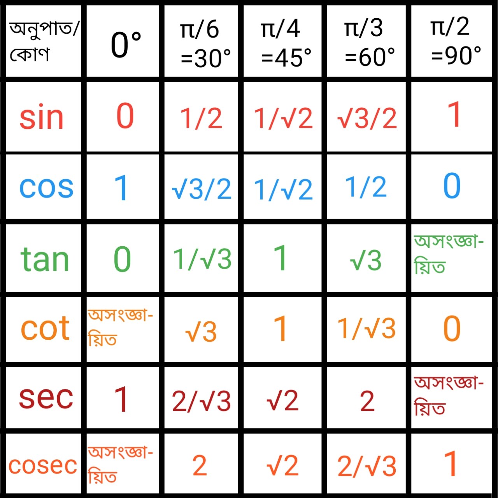

Information and Source :
- Trigonometry একটি গ্রিক শব্দ।
- Tri (তিন), gon(ধার) ও metro (পরিমান) এই তিনটি শব্দ নিয়ে Trigonometry গঠিত।
- মিশর ও বেবিলনীয় সভ্যতায় Trigonometry ব্যবহারের নিদর্শন রয়েছে। মিশরীয়রা ভূমি জরিপ ও প্রকৌশল কাজে এর বহুল ব্যবহার করত বলে ধারণা করা হয়। এর সাহায্যে জ্যোতির্বিদ গণ পৃথিবী থেকে দূরবর্তী গ্রহ নক্ষত্রের দূরত্ব নির্ণয় করতেন।
- Trigonometry 'র আলোচনা দুই শাখায় বিভক্ত। যথা:
- সমতলীয় ত্রিকোণমিতি [Plane Trigonometry]
- গোলীয় ত্রিকোণমিতি [Spherical Trigonometry]
Note : বর্তমান আলোচনা শুধুমাত্র "সমতলীয় ত্রিকোণমিতির" মধ্যে সীমাবদ্ধ।
- কোনো কোণের পরিমাপ নির্ণয়ে সাধারণত দুটি পদ্ধতি ব্যবহার করা হয়। যথা:
- ষাটমূলক পদ্ধতি [Sexagesimal System]
- বৃত্তীয় পদ্ধতি [Circular System]
1. ষাটমূলক পদ্ধতি : ষাটমূলক পদ্ধতিতে সমকোণকে কোণ পরিমাপের একক ধরা হয়।
- এ পদ্ধতিতে ,
1 সমকোণ = 90°
1° = 60'
1' = 60"
2. বৃত্তীয় পদ্ধতি : বৃত্তীয় পদ্ধতিতে এক রেডিয়ান কোণকে কোণ পরিমাপের একক ধরা হয়।
- রেডিয়ান:- কোনো বৃত্তের ব্যাসার্ধের সমান চাপ ঐ বৃত্তের কেন্দ্রে যে কোণ উৎপন্ন করে সেই কোণকে এক রেডিয়ান বলে।
- বৃত্তীয় পরিমাপ:- বৃত্তীয় পদ্ধতিতে অর্থাৎ, রেডিয়ান এককে কোনো কোণের পরিমাপকে তার বৃত্তীয় পরিমাপ বলা হয়।
- প্রতিজ্ঞা:-
প্রতিজ্ঞা ১ : কোনো দুটি বৃত্তের স্ব-স্ব পরিধি ও ব্যাসের অনুপাত সমান।
∴ বৃহত্তর বৃত্তের পরিধি / বৃহত্তর বৃত্তের ব্যাস = ক্ষুদ্রতর বৃত্তের পরিধি / ক্ষুদ্রতর বৃত্তের ব্যাস
প্রতিজ্ঞা ২ : বৃত্তের ব্যাসার্ধ r হলে, পরিধি 2πr ।
প্রতিজ্ঞা ৩ : বৃত্তের কোন চাপের উপর দন্ডায়মান কেন্দ্রস্থ কোণ ঐ বৃত্তচাপের সমানুপাতি।
∴ কেন্দ্রস্থ কোণ ∝ চাপ
প্রতিজ্ঞা ৪ : রেডিয়ান কোণ একটি ধ্রুব কোণ।
প্রতিজ্ঞা ৫ : r ব্যাসার্ধের কোনো বৃত্তে s দৈর্ঘ্যের কোনো চাপ কেন্দ্রে θ পরিমাণ কোণ উৎপন্ন করলে s = rθ হবে।
প্রতিজ্ঞা ৬ : 1° = (π/180)c এবং 1c =(180/π)°

sinθ = লম্ব/অতি
cosθ = ভূমি/অতি
tanθ = লম্ব/ভূমি
cotθ = ভূমি/লম্ব [tanθ এর বিপরীত]
secθ = অতি/ভূমি [cosθ এর বিপরীত]
cosecθ = অতি/লম্ব [sinθ এর বিপরীত]
Full name :
Sin→Sine....Cos→Cosine
Tan→Tangant....Cot→Cotangent
Sec→Secant....Cosec→Cosecant
Formulas :
- sinθ = 1/cosecθ ; cosecθ = 1/sinθ
- cosθ = 1/secθ ; secθ = 1/cosθ
- tanθ = 1/cotθ ; cotθ = 1/tanθ
- sin2θ + cos2θ=1
- sin2θ= 1-cos2θ
- cos2θ= 1-sin2θ
- sec2θ - tan2θ=1
- tan2θ= sec2θ-1
- sec2θ= tan2θ+1
- cosec2θ - cot2θ=1
- cot2θ= cosec2θ-1
- cosec2θ= cot2θ+1
- tanθ= sinθ/cosθ
- cotθ= cosθ/sinθ
Extra formulas :
- tanθ+cotθ = secθ•cosecθ
- tanθ√(1-sin2θ) = sinθ
- sec2θ+cosec2θ = sec2θ•cosec2θ
- 1/(1+sinθ) + 1/(1-sinθ) = 2sec2θ
- 1/(cosecθ-1) + 1/(1+cosecθ) = 2tan2θ
- 1/(1+sin2θ) + 1/(1+cosec2θ) = 1
- 1/(2-sin2θ) + 1/(2+tan2θ) = 1
- 1/sec2θ + 1/cosec2θ = 1
- 1/cos2θ - 1/cot2θ = 1
- 1/sin2θ - 1/tan2θ = 1
- 1/(1+tan2θ) + 1/(1+cot2θ) = 1
- √{(1-sinθ)/(1+sinθ)} = secθ-tanθ
- √{secθ+1}/{secθ-1} = cotθ+cosecθ
- sinθ/cosecθ + cosθ/secθ = 1
- secθ/cosθ - tanθ/cotθ = 1
- tanθ/(1-cotθ) + cotθ/(1-tanθ) = secθ•cosecθ
- cosθ/(1-tanθ) + sinθ/(1-cotθ) = sinθ+cosθ
- tanθ√(1-sin2θ) = sinθ
- (secθ+tanθ)/(cosecθ+cotθ) = (cosecθ-cotθ)/(secθ-tanθ)
- cosecθ/(cosecθ+1) + cosecθ/(cosecθ-1) = 2sec2θ
- sinθ/(1-cosθ) + (1-cosθ)/sinθ = 2cosecθ
- (tanθ+secθ)2 = (1+sinθ)/(1-sinθ)
- tanθ/(secθ+1) - (secθ-1)/tanθ = 0
- (tanθ+sinθ)2-(tanθ-sinθ)2
=4√{(tanθ+sinθ)(tanθ-sinθ)} - sin2θ = 2sinθ•cosθ = 2tanθ/(1+tan2θ
- sin3θ = 3sinθ-4sin3θ
- cos3θ = 4cos3θ-3cosθ
- tan2θ = 2tanθ/(1-tan2θ
Trigonometry এর অনুপাতে θ কোণের বিভিন্ন মান :
Quadrant অনুযায়ী ত্রিকোণমিতিক অনুপাতের পরিবর্তন :

- sin(-θ) = -sinθ
- cos(-θ) = cosθ
- tan(-θ) = -tanθ
- cosec(-θ) = -cosecθ
- sec(-θ) = secθ
- cot(-θ) = -cotθ
|
|
|---|
|
|
|---|
Note: যেকোনো কোণের ত্রিকোণমিতিক অনুপাত নির্ণয়ের পদ্ধতি:
------> n×(π/2)±θ <------
- n জোড় সংখ্যা হলে: sinθ→sinθ, cosθ→cosθ, tanθ→tanθ, cot→cotθ, secθ→secθ, cosecθ→cosecθ
- n বিজোড় সংখ্যা হলে: sinθ⇌cosθ, tanθ⇌cotθ, secθ⇌cosecθ